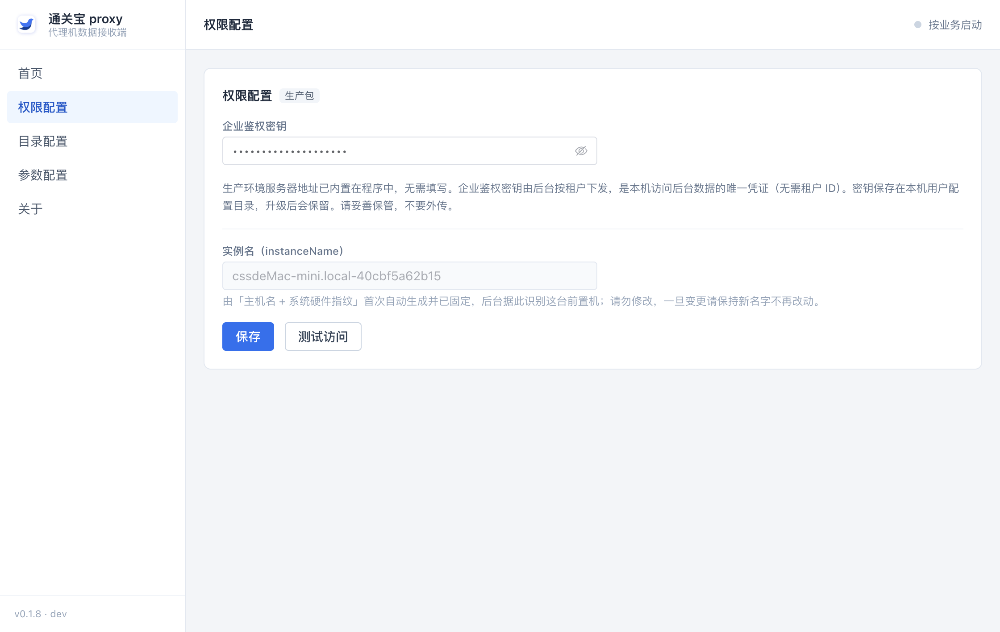
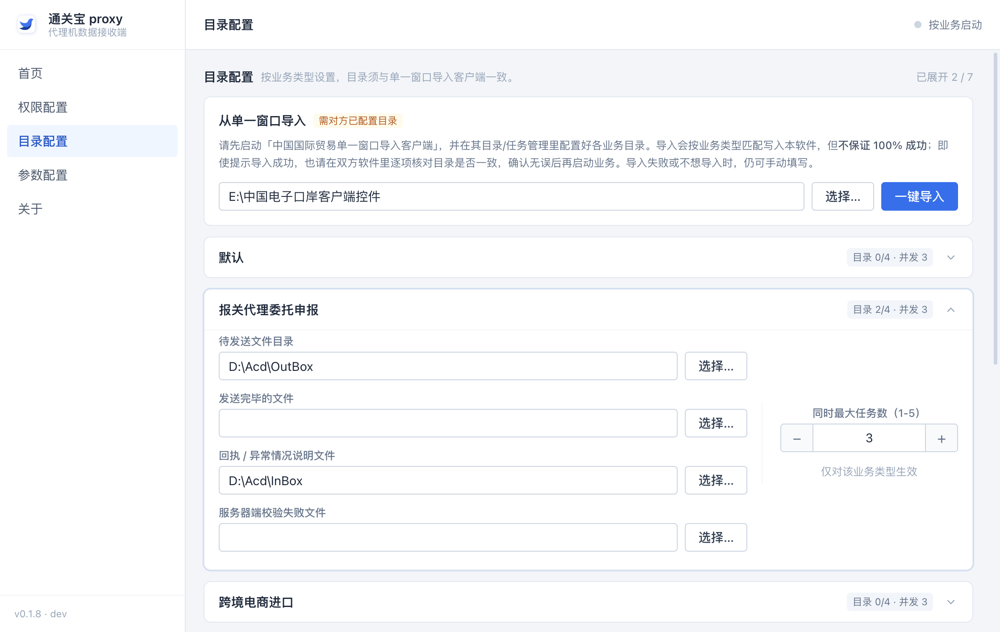
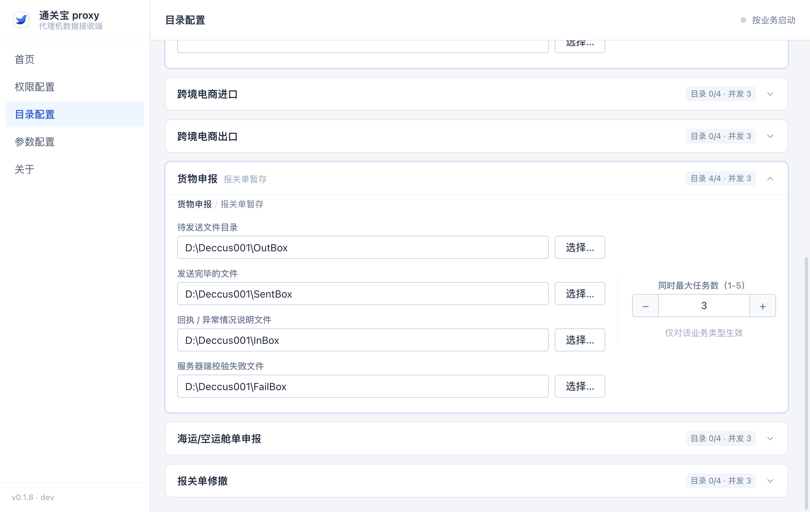
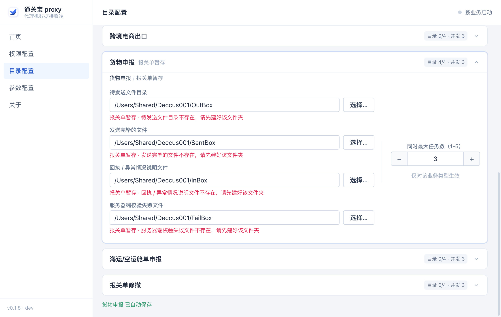
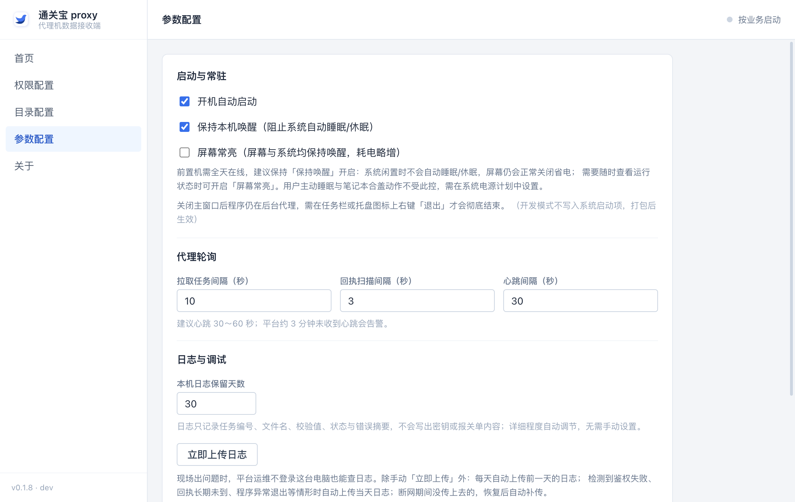
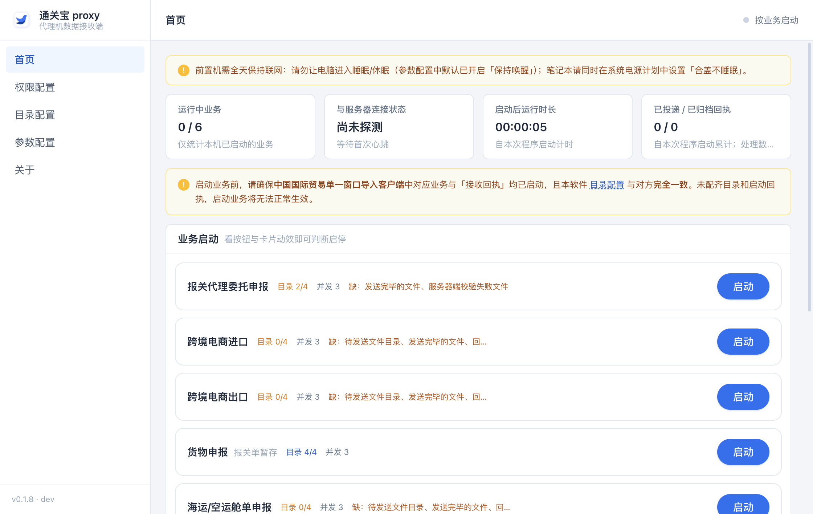
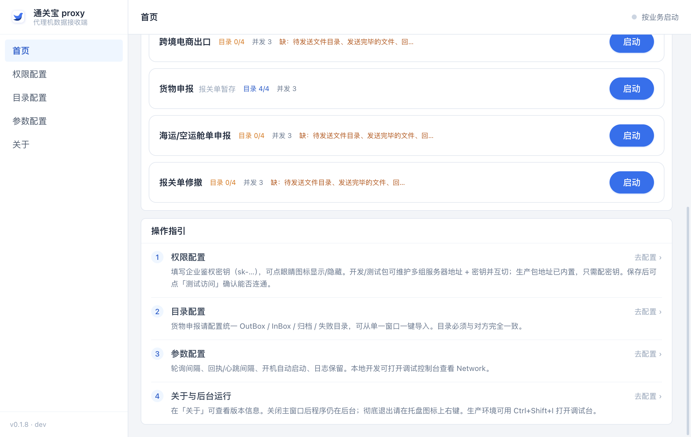

一句话先讲清楚：代理机不报关，它只搬文件。报关单从通关宝云平台下来，落到客户那台机器上「单一窗口导入客户端」的文件夹里；海关的回执从那个文件夹里回到通关宝。代理机就是两头之间那个不停跑腿的搬运工——它自己不申报，也不碰海关的网络。
三个间隔都是界面里能改的参数，上面的秒数是出厂默认值。改动保存后立即生效，不用重启。
下面这张图讲的就是它：软件按循环自动把服务端下发的 XML 文件拉取下载过来 → 建立任务记录 → 推到「目录配置」里和单一窗口一致的那个目录 → 再回头拉取对应目录里的回执传回服务端。其余 5 个业务类型目前只是界面上的目录配置项，没有任何真实处理逻辑和接口接入；这些业务的需求、接口、软件自身的操作逻辑都还未确定——不是配好目录就能跑，也没有可承诺的排期。要启用哪个，得先把需求定下来、再把接口定下来、再把软件逻辑做出来。
按住 Ctrl（或 ⌘）+ 滚轮 缩放，鼠标拖动空白处平移，也可以用上面那排按钮；回到 100% 只把缩放拉回原比例，平移过的位置不变，按 回到原点 才会同时复位缩放、平移和滚动；点全屏查看能占满整块屏幕细看，按 Esc 退出。工具条在你往下滚看图时会一直吸在顶部。这张图是只读的：节点拖不动、文字改不了、连线不能重画。图里三个「每 N 秒」都是参数配置里的默认值，现场可以按需要改，改完立即生效不用重启。
代理机不监听、不接收任何通知——它根本不知道服务端什么时候多了一张报关单，只能按固定间隔定时调接口，向服务端尝试拉取报文（默认 10 秒，参数配置里可改）。所以新单最多等一个轮询周期才会被拉走，这是设计如此，不是卡住了。断网期间的单也不会丢：留在服务端，网络恢复后下一次轮询自动接着拉。回执那半边同理——代理机是定时去扫目录，不是单一窗口通知它有回执了。
权限配置里唯一要填的就是企业鉴权密钥（sk- 开头）。它是这台机器访问通关宝数据的唯一凭证，一把密钥对应一个企业的申报数据。
| 用哪种密钥 | 从哪拿 | 能申报谁的数据 |
|---|---|---|
| 企业密钥（常规） | 找商务或产品要；他们从通关宝后管 → 租户管理里把这家企业的密钥复制出来给你。 | 只有这一家企业。换企业就得换密钥。 |
| 平台跨租户密钥（特殊） | 同样是找商务/产品开通，属于平台级凭证，不默认发放。 | 一把密钥可以处理所有有效业务租户的报关单——四个接口协议不变，代理机自动识别。 |
sk- 开头的企业鉴权密钥（找商务或产品要，见上一节）。生产环境的服务器地址已经做在软件里，不用填。双击安装包（通关宝 proxy Setup.exe）一路下一步。装哪个盘都行；只装当前登录用户，不需要管理员密码。
把 sk- 密钥粘进企业鉴权密钥，点保存，再点测试访问。下面那个「实例名」是软件自己生成的，代表这台机器在通关宝里的身份，灰的点不动，也别改。

先去把单一窗口导入客户端启动起来，然后在「目录配置」页顶部填上它的安装文件夹，点一键导入——软件会照着对方已经配好的目录自动填进来。导入后仍然要逐个核对，两边必须一模一样。

每个业务类型都有 4 个目录，各自的角色：
| 目录 | 谁往里放 | 谁从里取 |
|---|---|---|
| 待发送文件目录（OutBox） | 代理机放报关单 | 单一窗口取走发海关 |
| 发送完毕的文件（SentBox） | 单一窗口放已发送的 | 留底，两边都不用管 |
| 回执 / 异常情况说明文件（InBox） | 单一窗口放海关回执 | 代理机取走传回通关宝 |
| 服务器端校验失败文件（FailBox） | 单一窗口放没过校验的 | 出问题时人工看 |


D:\ 路径是按现场 Windows 写法填的示例。C:\Program Files 这类不允许写的目录里。货物申报这一组至少要配齐「待发送」和「回执」；缺目录时点启动会被软件直接拦住，不会静默失败。
开机自动启动和保持本机唤醒默认都开着，别关。屏幕常亮不用开（纯展示用，费电）。三个轮询间隔用默认即可。要注意「保持本机唤醒」只拦得住系统自动睡眠，手动睡眠、按电源键、合笔记本盖子都拦不住，所以电源计划必须在系统层面另配一次——见下面这块。

Windows 一旦进入睡眠或休眠，整个用户态会被冻结、网卡同时断电——代理机的拉取、回执扫描、心跳、日志上传会全部停摆，报关单留在云端积压，直到机器醒过来才恢复。软件里的「保持本机唤醒」只能阻止系统自动睡眠（底层是 Windows 的 SetThreadExecutionState），拦不住有人手动点睡眠、按电源键、合笔记本盖子。
所以电源计划要在系统层面一次配好（用管理员身份打开 PowerShell，各执行一次，重启后依然有效）：
powercfg /change standby-timeout-ac 0 —— 接交流电源时永不睡眠powercfg /change hibernate-timeout-ac 0 —— 接交流电源时永不休眠万一真睡了会丢单吗？不会。睡眠期间任务留在云端，机器醒来后代理机立刻自己补跑一轮业务和日志上传，不用人工干预；日志里也会留下「系统进入睡眠/休眠」和「已从睡眠/休眠中恢复」两条记录，回头查那段时间为什么没动静一目了然。
先确认单一窗口里对应业务和「接收回执」两个任务都已经在跑（首页有黄条提醒）。再回本软件首页，找到货物申报（报关单暂存）那张卡，点右边启动；卡片变蓝并持续呼吸光就是跑起来了。

走一票真实报关单，看首页四个格子：运行中业务 1 / 6、与服务器连接状态 已连通、已投递 / 已归档回执两个数字会往上跳。对得上就算交付完成。

版本和更新在左侧「关于」页：检查更新 → 下载更新 → 重启并安装。安装会自动退出、完成后自动打开，本机配置和日志都保留。
| 看到什么 | 多半是怎么回事 | 怎么办 |
|---|---|---|
| 「无法启动：该业务还有 X 个目录未配置」 | 目录没填齐 | 去「目录配置」补齐这一组 4 个目录，再点启动 |
| 「请先配置货物申报的 OutBox / InBox 目录」 | 「待发送」或「回执」目录是空的 | 补齐这两个目录就能启动 |
| 「XX不存在，请先建好该文件夹」 | 填的路径在这台电脑上没有 | 先在盘上把文件夹建出来，或用旁边「选择…」挑现成的 |
| 「必须是绝对路径」 | 写成了相对路径 / 少了盘符 | 写成 D:\Deccus001\OutBox 这种带盘符的完整路径 |
| 「XX不可读写」 | 文件夹只读、被占用，或放在不允许写的系统目录 | 换到 D 盘一类的普通目录，并确认这台机登录的账号能写 |
| 「测试访问」= 访问失败 | 密钥不对 · 本机没外网 · 被防火墙或安全软件拦 | 先确认这台机能打开网页；再找商务/产品核对密钥；还不行把本软件加进安全软件白名单 |
| 首页「与服务器连接状态 = 未连通」 | 断网或服务器不通 | 报关单不会丢，网通了自动接着搬；长时间不恢复再查网络 |
| 目录都对了，但「待发送」里没文件 | 业务其实没启动，或通关宝那边根本没派单 | 看首页卡片是不是蓝色在呼吸；再看通关宝上这张单是否已进入待发状态 |
| 「待发送」里有文件，通关宝一直没更新 | 单一窗口自己的任务没跑 /「接收回执」没开 / 两边目录不一致 | 去单一窗口确认导入任务和接收回执都在运行，并和「目录配置」逐条比对路径 |
| 回执在「回执」目录里躺着没被传 | 该回执对不上代理机放出去的文件（别人的文件或历史遗留） | 属正常，代理机只处理自己放出去过的；怀疑漏了就把当天日志传给通关宝查 |
| 回执上传失败，反复重试 | 网络抖动，或后端暂时不可用 | 不用管，进重试队列自动接着传；长期不恢复再查网络和后端 |
| 某段时间完全没干活，日志里出现「系统进入睡眠/休眠」 | 主机睡眠或休眠：用户态冻结 + 网卡断电，轮询与上传一起停 | 「参数配置」里保持本机唤醒打开，并按第 4 步用 powercfg 把系统设成永不睡眠、永不休眠；服务器还要检查有没有定时重启 |
| 首页顶部出现新版本横幅 | 在线升级提醒 | 点「前往更新」去「关于」页操作；升级前会记下正在跑的业务，装完问你是否恢复 |